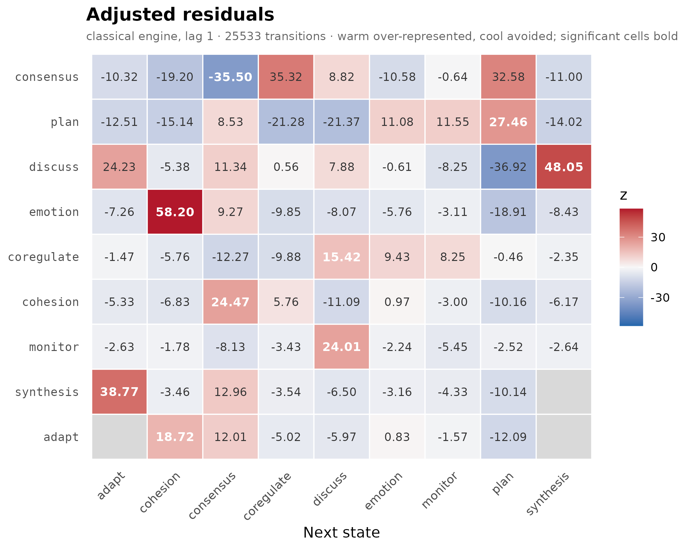
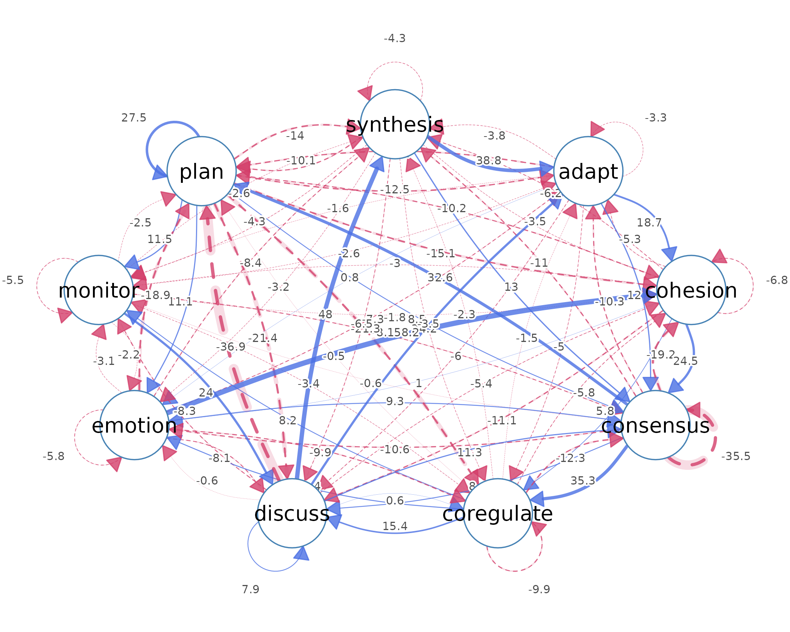
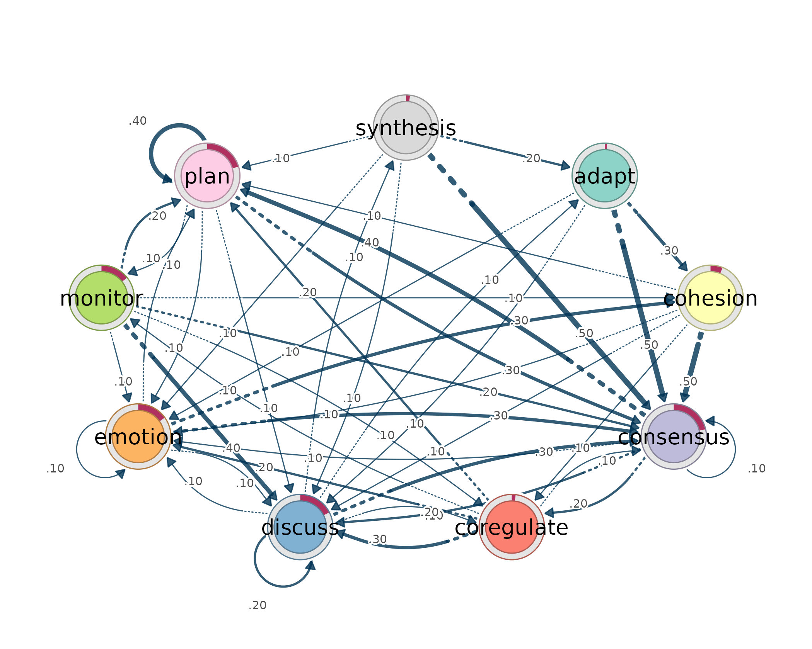
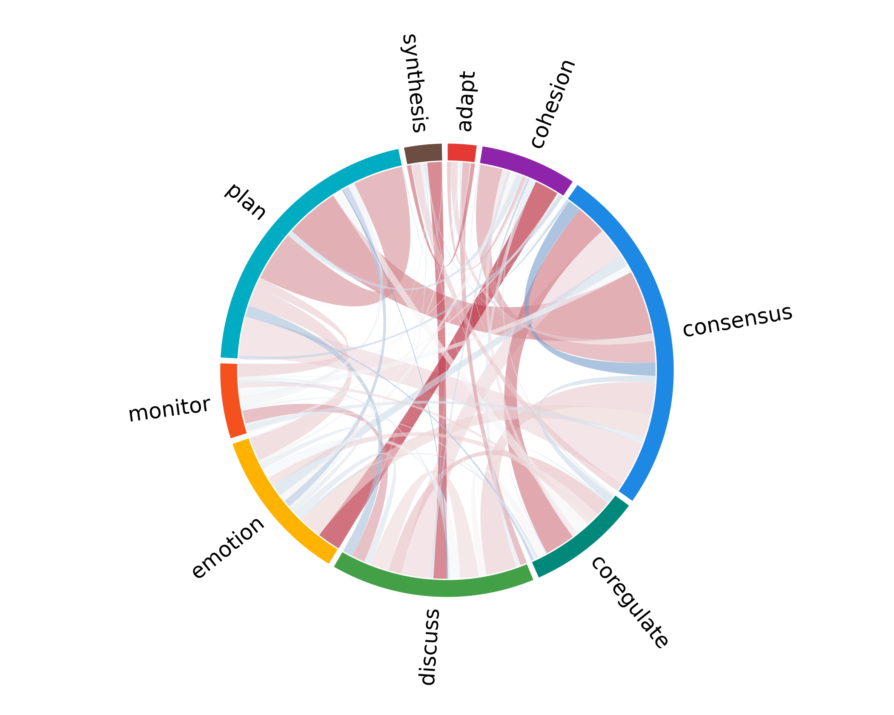
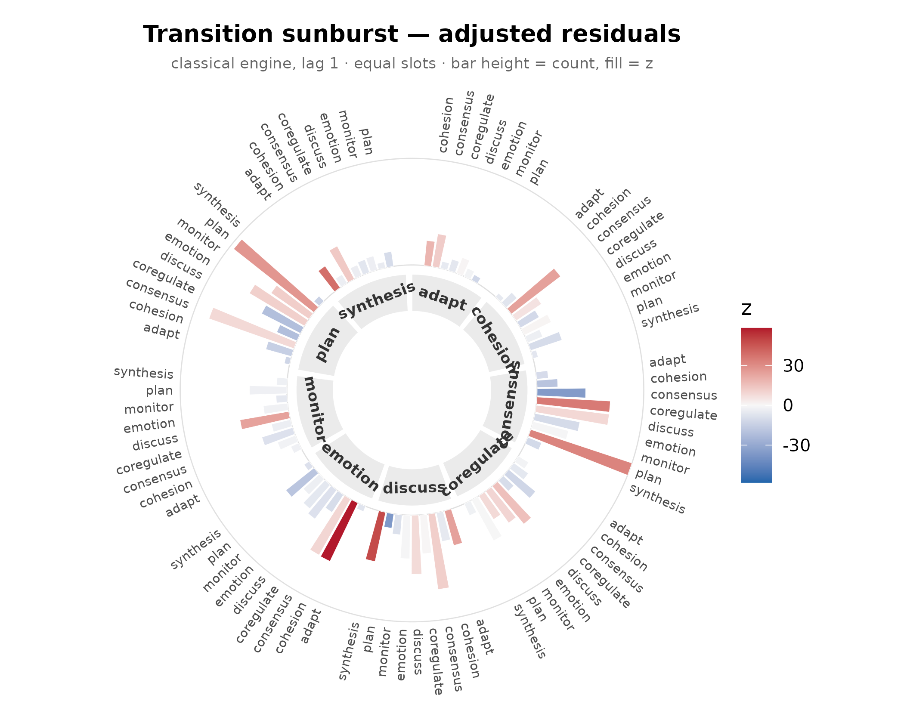
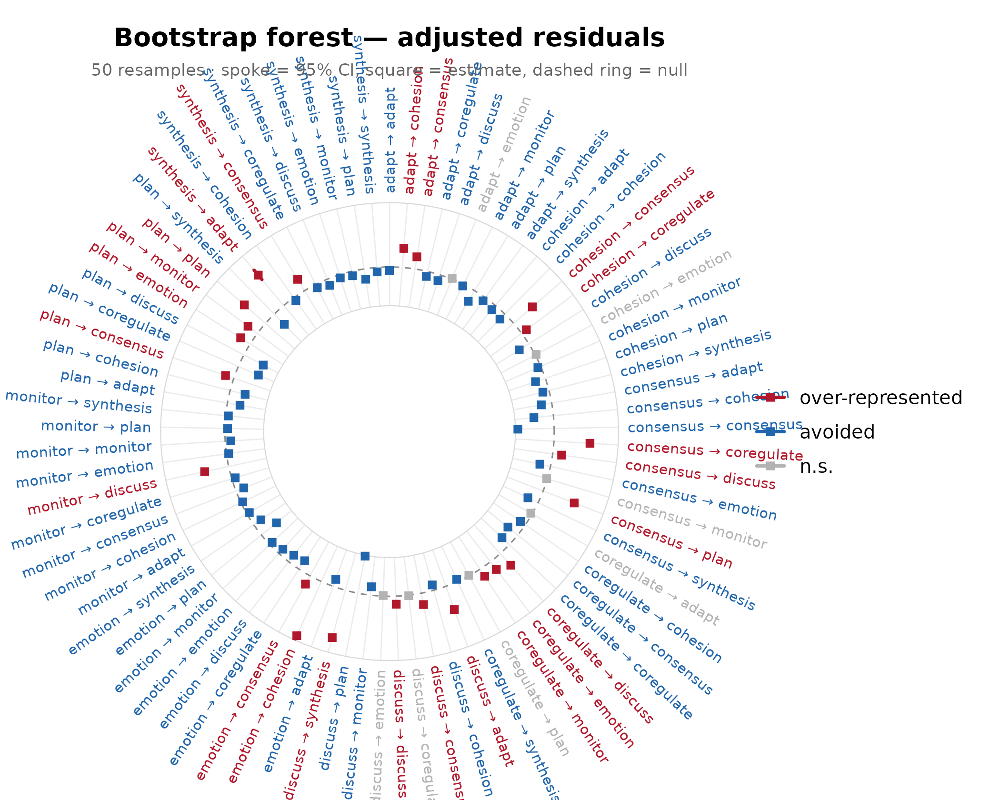
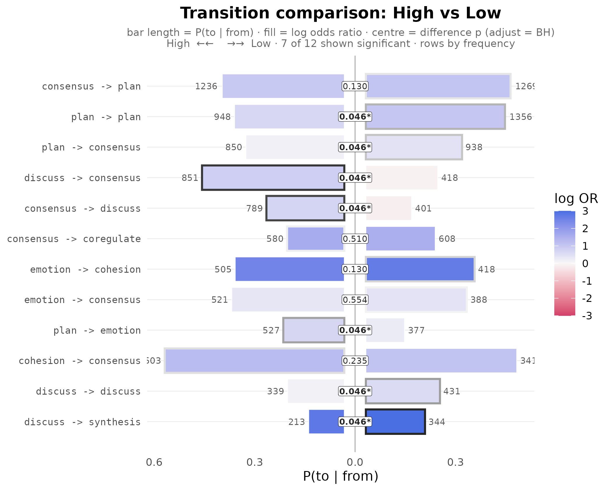
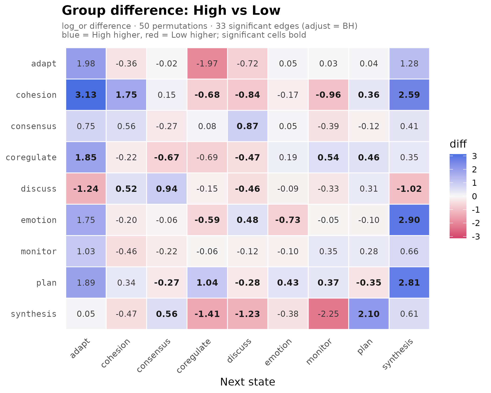

The Method
Lag-sequential analysis (LSA) studies ordered categorical processes.
It asks whether, given that one state has just occurred, another state
follows more often or less often than chance. The unit of analysis is
the transition from a source state to a target state, written as
from -> to.
The reference model is independence. Under independence, the current state has no sequential memory: the next state is expected only from the overall marginal distribution of states, not from the state that preceded it. LSA compares each observed transition count with the count expected under that no-memory model. The adjusted residual is the standardized departure from that expectation. A positive residual means that the transition is over-represented. A negative residual means that the transition is avoided. Values near zero indicate that the transition is close to what independence would predict.
The residual is therefore the test statistic for a local sequential claim. A transition with a large residual is not merely common. It is a transition whose observed frequency departs from the chance baseline defined by the row and column margins of the transition table.
Why lagdynamics
LSA has a long history in behavioral, educational, and interaction research, but applied studies often stop at description. Observed transition rates are reported, plotted, and interpreted, while the inferential question is left implicit: whether the apparent pattern is larger than expected under chance sequential pairing.
Existing tooling has also tended to be dated, object-centric, or
difficult to combine with modern data workflows.
lagdynamics modernizes this practice. It implements
lag-sequential analysis as a tidy, visual, interoperable, and
confirmatory workflow. Each result is returned by a verb as a
one-row-per-observation data frame. The fitted model can be read,
plotted, resampled, compared across groups, and converted to network
objects without indexing into internal slots.
The design follows the Dynalytics framework of Saqr, Lopez-Pernas,
and Misiejuk (2026). Dynalytics treats analysis as a scientific
contract: every analytical claim must be matched by evidence appropriate
to the structure, scope, and complexity of the claim. In
lagdynamics, an edge is a tested departure from
independence. Descriptive claims use descriptive evidence, edge claims
use edge-level uncertainty, whole-network claims use reproducibility
evidence, and group-difference claims use comparison procedures that
preserve the empirical unit of the sequence.
Hands-On Tour
The main example is group_regulation, a bundled
wide-format data set of 2,000 collaborative-learning sessions. Each row
is one sequence, each column is an ordered time point, and each cell is
a coded regulation action. The smaller engagement data set
is also bundled and is used below to show the same input grammar on
weekly engagement trajectories.
dim(group_regulation)
#> [1] 2000 26
head(group_regulation)
#> T1 T2 T3 T4 T5 T6 T7
#> 1 cohesion consensus discuss synthesis adapt consensus plan
#> 2 plan emotion consensus discuss synthesis adapt emotion
#> 3 consensus coregulate monitor consensus plan emotion consensus
#> 4 monitor emotion plan discuss synthesis consensus discuss
#> 5 discuss emotion cohesion <NA> <NA> <NA> <NA>
#> 6 plan plan consensus plan plan plan plan
#> T8 T9 T10 T11 T12 T13 T14
#> 1 consensus <NA> <NA> <NA> <NA> <NA> <NA>
#> 2 <NA> <NA> <NA> <NA> <NA> <NA> <NA>
#> 3 monitor consensus coregulate emotion cohesion cohesion consensus
#> 4 cohesion consensus plan plan emotion <NA> <NA>
#> 5 <NA> <NA> <NA> <NA> <NA> <NA> <NA>
#> 6 plan emotion plan plan consensus coregulate adapt
#> T15 T16 T17 T18 T19 T20 T21 T22 T23
#> 1 <NA> <NA> <NA> <NA> <NA> <NA> <NA> <NA> <NA>
#> 2 <NA> <NA> <NA> <NA> <NA> <NA> <NA> <NA> <NA>
#> 3 plan emotion plan plan consensus monitor consensus plan emotion
#> 4 <NA> <NA> <NA> <NA> <NA> <NA> <NA> <NA> <NA>
#> 5 <NA> <NA> <NA> <NA> <NA> <NA> <NA> <NA> <NA>
#> 6 cohesion consensus plan consensus <NA> <NA> <NA> <NA> <NA>
#> T24 T25 T26
#> 1 <NA> <NA> <NA>
#> 2 <NA> <NA> <NA>
#> 3 plan consensus discuss
#> 4 <NA> <NA> <NA>
#> 5 <NA> <NA> <NA>
#> 6 <NA> <NA> <NA>
dim(engagement)
#> [1] 138 15
head(engagement)
#> 1 2 3 4 5 6
#> [1,] "Active" "Disengaged" "Disengaged" "Disengaged" "Active" "Active"
#> [2,] "Average" "Average" "Average" "Average" "Average" "Average"
#> [3,] "Average" "Active" "Active" "Active" "Active" "Active"
#> [4,] "Active" "Active" "Active" "Active" "Active" "Average"
#> [5,] "Active" "Active" "Active" "Average" "Active" "Average"
#> [6,] "Average" "Average" "Disengaged" "Average" "Disengaged" "Disengaged"
#> 7 8 9 10 11 12
#> [1,] "Active" "Active" "Average" "Active" "Average" "Active"
#> [2,] "Average" "Average" "Average" "Active" "Average" "Average"
#> [3,] "Active" "Active" "Active" "Average" "Active" "Active"
#> [4,] "Average" "Active" "Active" "Active" "Average" "Active"
#> [5,] "Active" "Active" "Active" "Disengaged" "Active" "Active"
#> [6,] "Average" "Average" "Average" "Disengaged" "Average" "Disengaged"
#> 13 14 15
#> [1,] NA NA NA
#> [2,] "Average" "Average" "Average"
#> [3,] "Active" "Active" "Active"
#> [4,] "Average" "Active" "Average"
#> [5,] "Active" "Average" "Average"
#> [6,] "Average" "Average" "Average"Fit
lsa() fits the model in one call. It tabulates the
transition matrix, derives expected counts under independence, computes
adjusted residuals, and records the recipe used to estimate the model.
The printed object is a compact summary. The fitted object itself is
read through verbs.
fit <- lsa(group_regulation)
fit
#> Lag Sequential Analysis — classical (lag 1, directed)
#> 9 states | 25533 transitions | 27533 events | 2000 sequences
#> states: adapt, cohesion, consensus, coregulate, discuss, emotion, monitor, plan, synthesis
#> independence: G² = 13203.8, df = 64, p <2e-16
#>
#> Significant transitions (p < 0.05): 72 of 81
#> strongest over-represented (of 23):
#> emotion -> cohesion z = +58.2 ***
#> discuss -> synthesis z = +48.0 ***
#> synthesis -> adapt z = +38.8 ***
#> consensus -> coregulate z = +35.3 ***
#> consensus -> plan z = +32.6 ***
#> ... and 18 more
#>
#> Initial states:
#> consensus 0.214 ████████████████████████
#> plan 0.204 ███████████████████████
#> discuss 0.175 ████████████████████
#> emotion 0.151 █████████████████
#> monitor 0.144 ████████████████
#> cohesion 0.060 ███████
#> synthesis 0.019 ██
#> coregulate 0.019 ██
#> adapt 0.011 █Read a Fit
The public surface is tidy. Every result is produced by a verb, and
each verb returns a data frame with one row per observation.
transitions() returns one row per
from -> to cell. The columns contain observed counts,
expected counts, transition probabilities, adjusted residuals, p-values,
and related association statistics.
transitions(fit) |> head() # one row per from -> to transition
#> from to lag count expected prob prob_col adj_res p
#> 1 adapt adapt 1 0 10.6 0.00000 0.00000 -3.32 8.96e-04
#> 2 cohesion adapt 1 5 35.3 0.00295 0.00942 -5.33 9.89e-08
#> 3 consensus adapt 1 30 131.6 0.00474 0.05650 -10.32 5.64e-25
#> 4 coregulate adapt 1 32 41.0 0.01624 0.06026 -1.47 1.40e-01
#> 5 discuss adapt 1 282 82.2 0.07137 0.53107 24.23 1.03e-129
#> 6 emotion adapt 1 7 59.0 0.00247 0.01318 -7.26 3.98e-13
#> yules_q kappa kappa_z kappa_p lift sign significant
#> 1 -1.000 -1.000 -3.41 6.56e-04 0.000 under TRUE
#> 2 -0.768 -0.865 -5.50 3.76e-08 0.142 under TRUE
#> 3 -0.698 -0.781 -10.63 2.23e-26 0.228 under TRUE
#> 4 -0.134 -0.254 -1.75 7.96e-02 0.781 under FALSE
#> 5 0.736 0.419 23.26 1.07e-119 3.432 over TRUE
#> 6 -0.811 -0.887 -7.48 7.60e-14 0.119 under TRUEThe companion verbs read the other parts of the same fitted model.
nodes() reports incoming and outgoing volume by state.
tests() reports tablewise independence tests.
initial() reports the initial-state distribution when the
input contains sequences rather than a precomputed transition
matrix.
nodes(fit) # one row per state, with in/out totals
#> state outgoing incoming
#> 1 adapt 509 531
#> 2 cohesion 1695 1718
#> 3 consensus 6329 6369
#> 4 coregulate 1970 2095
#> 5 discuss 3951 3916
#> 6 emotion 2837 2772
#> 7 monitor 1433 1228
#> 8 plan 6157 6214
#> 9 synthesis 652 690
tests(fit) # tablewise independence tests (G^2, chi-square)
#> test statistic df p
#> 1 lrx2 13204 64 0
#> 2 x2 15435 64 0
initial(fit) # initial-state distribution
#> state init_prob
#> 1 adapt 0.0115
#> 2 cohesion 0.0605
#> 3 consensus 0.2140
#> 4 coregulate 0.0190
#> 5 discuss 0.1755
#> 6 emotion 0.1515
#> 7 monitor 0.1440
#> 8 plan 0.2045
#> 9 synthesis 0.0195summary() returns the same tidy discipline at the model
level: one row per fitted model. For a grouped model, the same verb
returns one row per group.
summary(fit) # one-row overview
#> Lag Sequential Analysis
#> =======================
#> Lag Sequential Analysis — classical (lag 1, directed)
#> 9 states | 25533 transitions | 27533 events | 2000 sequences
#> states: adapt, cohesion, consensus, coregulate, discuss, emotion, monitor, plan, synthesis
#> independence: G² = 13203.8, df = 64, p <2e-16
#>
#> Significant transitions (p < 0.05): 72 of 81
#> strongest over-represented (of 23):
#> emotion -> cohesion z = +58.2 ***
#> discuss -> synthesis z = +48.0 ***
#> synthesis -> adapt z = +38.8 ***
#> consensus -> coregulate z = +35.3 ***
#> consensus -> plan z = +32.6 ***
#> ... and 18 more
#>
#> Initial states:
#> consensus 0.214 ████████████████████████
#> plan 0.204 ███████████████████████
#> discuss 0.175 ████████████████████
#> emotion 0.151 █████████████████
#> monitor 0.144 ████████████████
#> cohesion 0.060 ███████
#> synthesis 0.019 ██
#> coregulate 0.019 ██
#> adapt 0.011 █
#>
#> Node activity (share of transitions):
#> adapt out 0.020 █ in 0.021 █
#> cohesion out 0.066 ███ in 0.067 ███
#> consensus out 0.248 ████████████ in 0.249 ████████████
#> coregulate out 0.077 ████ in 0.082 ████
#> discuss out 0.155 ███████ in 0.153 ███████
#> emotion out 0.111 █████ in 0.109 █████
#> monitor out 0.056 ███ in 0.048 ██
#> plan out 0.241 ████████████ in 0.243 ████████████
#> synthesis out 0.026 █ in 0.027 █
#>
#> Observed counts (obs):
#> adapt cohesion consensus coregulate discuss emotion monitor plan
#> adapt 0 139 243 11 30 61 17 8
#> cohesion 5 46 844 202 101 196 56 239
#> consensus 30 94 519 1188 1190 460 295 2505
#> coregulate 32 71 265 46 539 339 170 471
#> discuss 282 188 1269 333 770 418 88 46
#> emotion 7 923 909 97 289 218 103 283
#> monitor 16 80 228 83 538 130 26 309
#> plan 6 155 1788 106 418 904 465 2304
#> synthesis 153 22 304 29 41 46 8 49
#> synthesis
#> adapt 0
#> cohesion 6
#> consensus 48
#> coregulate 37
#> discuss 557
#> emotion 8
#> monitor 23
#> plan 11
#> synthesis 0
#>
#> Expected counts (exp):
#> adapt cohesion consensus coregulate discuss emotion monitor plan
#> adapt 10.6 34.2 127 41.8 78.1 55.3 24.5 124
#> cohesion 35.2 114.0 423 139.1 260.0 184.0 81.5 413
#> consensus 131.6 425.9 1579 519.3 970.7 687.1 304.4 1540
#> coregulate 41.0 132.6 491 161.6 302.1 213.9 94.7 479
#> discuss 82.2 265.8 986 324.2 606.0 428.9 190.0 962
#> emotion 59.0 190.9 708 232.8 435.1 308.0 136.4 690
#> monitor 29.8 96.4 357 117.6 219.8 155.6 68.9 349
#> plan 128.0 414.3 1536 505.2 944.3 668.4 296.1 1498
#> synthesis 13.6 43.9 163 53.5 100.0 70.8 31.4 159
#> synthesis
#> adapt 13.8
#> cohesion 45.8
#> consensus 171.0
#> coregulate 53.2
#> discuss 106.8
#> emotion 76.7
#> monitor 38.7
#> plan 166.4
#> synthesis 17.6
#>
#> Transitional probabilities (prob):
#> adapt cohesion consensus coregulate discuss emotion monitor plan
#> adapt 0.000 0.273 0.477 0.022 0.059 0.120 0.033 0.016
#> cohesion 0.003 0.027 0.498 0.119 0.060 0.116 0.033 0.141
#> consensus 0.005 0.015 0.082 0.188 0.188 0.073 0.047 0.396
#> coregulate 0.016 0.036 0.135 0.023 0.274 0.172 0.086 0.239
#> discuss 0.071 0.048 0.321 0.084 0.195 0.106 0.022 0.012
#> emotion 0.002 0.325 0.320 0.034 0.102 0.077 0.036 0.100
#> monitor 0.011 0.056 0.159 0.058 0.375 0.091 0.018 0.216
#> plan 0.001 0.025 0.290 0.017 0.068 0.147 0.076 0.374
#> synthesis 0.235 0.034 0.466 0.044 0.063 0.071 0.012 0.075
#> synthesis
#> adapt 0.000
#> cohesion 0.004
#> consensus 0.008
#> coregulate 0.019
#> discuss 0.141
#> emotion 0.003
#> monitor 0.016
#> plan 0.002
#> synthesis 0.000
#>
#> Adjusted residuals (adj_res):
#> adapt cohesion consensus coregulate discuss emotion monitor plan
#> adapt -3.32 18.72 12.01 -5.019 -5.97 0.826 -1.565 -12.090
#> cohesion -5.33 -6.83 24.47 5.764 -11.09 0.968 -2.998 -10.165
#> consensus -10.32 -19.20 -35.50 35.316 8.82 -10.581 -0.636 32.584
#> coregulate -1.47 -5.76 -12.27 -9.882 15.42 9.433 8.249 -0.461
#> discuss 24.23 -5.38 11.34 0.556 7.88 -0.609 -8.251 -36.920
#> emotion -7.26 58.20 9.27 -9.852 -8.07 -5.761 -3.113 -18.908
#> monitor -2.63 -1.78 -8.13 -3.426 24.01 -2.235 -5.454 -2.519
#> plan -12.51 -15.14 8.53 -21.279 -21.37 11.078 11.547 27.464
#> synthesis 38.77 -3.46 12.96 -3.541 -6.50 -3.161 -4.331 -10.140
#> synthesis
#> adapt -3.80
#> cohesion -6.17
#> consensus -11.00
#> coregulate -2.35
#> discuss 48.05
#> emotion -8.43
#> monitor -2.64
#> plan -14.02
#> synthesis -4.31Focused transition tables are requested through arguments to
transitions(). The call states the scientific filter
directly: significant transitions, over-represented transitions, avoided
transitions, or transitions with a minimum observed count.
transitions(fit, significant = TRUE) |> head() # significant only
#> from to lag count expected prob prob_col adj_res p yules_q
#> 1 adapt adapt 1 0 10.6 0.00000 0.00000 -3.32 8.96e-04 -1.000
#> 2 cohesion adapt 1 5 35.3 0.00295 0.00942 -5.33 9.89e-08 -0.768
#> 3 consensus adapt 1 30 131.6 0.00474 0.05650 -10.32 5.64e-25 -0.698
#> 4 discuss adapt 1 282 82.2 0.07137 0.53107 24.23 1.03e-129 0.736
#> 5 emotion adapt 1 7 59.0 0.00247 0.01318 -7.26 3.98e-13 -0.811
#> 6 monitor adapt 1 16 29.8 0.01117 0.03013 -2.63 8.54e-03 -0.318
#> kappa kappa_z kappa_p lift sign significant
#> 1 -1.000 -3.41 6.56e-04 0.000 under TRUE
#> 2 -0.865 -5.50 3.76e-08 0.142 under TRUE
#> 3 -0.781 -10.63 2.23e-26 0.228 under TRUE
#> 4 0.419 23.26 1.07e-119 3.432 over TRUE
#> 5 -0.887 -7.48 7.60e-14 0.119 under TRUE
#> 6 -0.475 -2.73 6.35e-03 0.537 under TRUE
transitions(fit, direction = "over") |> head(4) # over-represented
#> from to lag count expected prob prob_col adj_res p
#> 1 discuss adapt 1 282 82.2 0.0714 0.5311 24.2 1.03e-129
#> 2 synthesis adapt 1 153 13.6 0.2347 0.2881 38.8 0.00e+00
#> 3 adapt cohesion 1 139 34.2 0.2731 0.0809 18.7 3.31e-78
#> 4 emotion cohesion 1 923 190.9 0.3253 0.5373 58.2 0.00e+00
#> yules_q kappa kappa_z kappa_p lift sign significant
#> 1 0.736 0.419 23.3 1.07e-119 3.43 over TRUE
#> 2 0.904 0.256 37.0 2.44e-299 11.28 over TRUE
#> 3 0.696 0.197 17.5 7.86e-69 4.06 over TRUE
#> 4 0.860 0.439 55.0 0.00e+00 4.84 over TRUE
transitions(fit, direction = "under") |> head(4) # avoided
#> from to lag count expected prob prob_col adj_res p yules_q
#> 1 adapt adapt 1 0 10.6 0.00000 0.00000 -3.32 8.96e-04 -1.000
#> 2 cohesion adapt 1 5 35.3 0.00295 0.00942 -5.33 9.89e-08 -0.768
#> 3 consensus adapt 1 30 131.6 0.00474 0.05650 -10.32 5.64e-25 -0.698
#> 4 emotion adapt 1 7 59.0 0.00247 0.01318 -7.26 3.98e-13 -0.811
#> kappa kappa_z kappa_p lift sign significant
#> 1 -1.000 -3.41 6.56e-04 0.000 under TRUE
#> 2 -0.865 -5.50 3.76e-08 0.142 under TRUE
#> 3 -0.781 -10.63 2.23e-26 0.228 under TRUE
#> 4 -0.887 -7.48 7.60e-14 0.119 under TRUE
transitions(fit, min_count = 500) |> head(4) # frequently observed
#> from to lag count expected prob prob_col adj_res p
#> 1 emotion cohesion 1 923 191 0.325 0.5373 58.2 0.00e+00
#> 2 cohesion consensus 1 844 423 0.498 0.1325 24.5 3.06e-132
#> 3 consensus consensus 1 519 1579 0.082 0.0815 -35.5 5.32e-276
#> 4 discuss consensus 1 1269 986 0.321 0.1992 11.3 8.71e-30
#> yules_q kappa kappa_z kappa_p lift sign significant
#> 1 0.860 0.4393 54.99 0.00e+00 4.835 over TRUE
#> 2 0.534 0.2816 21.83 1.12e-105 1.996 over TRUE
#> 3 -0.661 -0.6907 -37.57 7.65e-309 0.329 under TRUE
#> 4 0.209 0.0671 8.33 8.26e-17 1.288 over TRUEVisualise
One plotting verb covers the main views:
plot(fit, type = ). The default heatmap displays adjusted
residuals, which makes it the direct visual form of the LSA model. The
residual network displays the same departures as directed edges. A
probability-weighted network switches the representation to a TNA
transition network. Chord and sunburst views summarize transition flow
and outgoing distributions. Uncertainty forests and group barrels are
produced by plot() on validation and comparison
results.
plot(fit) # residual heatmap (default)
plot(fit, type = "network") # residual network
plot(fit, type = "network", weights = "prob") # TNA transition network
plot(fit, type = "chord")
plot(fit, type = "sunburst")
See vignette("plotting", package = "lagdynamics") for
the full plotting gallery.
Get Data In
The canonical input is a sequence object: one or more categorical sequences with missing cells dropped as missingness rather than modeled as a state. Wide data frames and matrices use rows as sequences and columns as ordered positions. This is the shape of both bundled data sets.
lsa(engagement)
#> Lag Sequential Analysis — classical (lag 1, directed)
#> 3 states | 1734 transitions | 1870 events | 136 sequences
#> states: Active, Average, Disengaged
#> independence: G² = 618.3, df = 4, p <2e-16
#>
#> Significant transitions (p < 0.05): 7 of 9
#> strongest over-represented (of 3):
#> Active -> Active z = +21.7 ***
#> Disengaged -> Disengaged z = +15.4 ***
#> Average -> Average z = +12.5 ***
#>
#> Initial states:
#> Active 0.382 ████████████████████████
#> Average 0.368 ███████████████████████
#> Disengaged 0.250 ████████████████
lsa(group_regulation)
#> Lag Sequential Analysis — classical (lag 1, directed)
#> 9 states | 25533 transitions | 27533 events | 2000 sequences
#> states: adapt, cohesion, consensus, coregulate, discuss, emotion, monitor, plan, synthesis
#> independence: G² = 13203.8, df = 64, p <2e-16
#>
#> Significant transitions (p < 0.05): 72 of 81
#> strongest over-represented (of 23):
#> emotion -> cohesion z = +58.2 ***
#> discuss -> synthesis z = +48.0 ***
#> synthesis -> adapt z = +38.8 ***
#> consensus -> coregulate z = +35.3 ***
#> consensus -> plan z = +32.6 ***
#> ... and 18 more
#>
#> Initial states:
#> consensus 0.214 ████████████████████████
#> plan 0.204 ███████████████████████
#> discuss 0.175 ████████████████████
#> emotion 0.151 █████████████████
#> monitor 0.144 ████████████████
#> cohesion 0.060 ███████
#> synthesis 0.019 ██
#> coregulate 0.019 ██
#> adapt 0.011 █The canonical sequence representation and the raw transition table can also be inspected directly. These helpers are useful when the sequencing contract needs to be made explicit before a model is fitted.
as.data.frame(lsa_data(group_regulation)) |> head(6)
#> seq_id index state
#> 1 1 1 cohesion
#> 2 1 2 consensus
#> 3 1 3 discuss
#> 4 1 4 synthesis
#> 5 1 5 adapt
#> 6 1 6 consensus
as.data.frame(lsa_transitions(group_regulation)) |> head(6)
#> from to lag count row_total col_total n_transitions
#> 1 adapt adapt 1 0 509 531 25533
#> 2 cohesion adapt 1 5 1695 531 25533
#> 3 consensus adapt 1 30 6329 531 25533
#> 4 coregulate adapt 1 32 1970 531 25533
#> 5 discuss adapt 1 282 3951 531 25533
#> 6 emotion adapt 1 7 2837 531 25533Raw event logs are handled with the same actor /
action / time grammar. The bundled
group_regulation_long log is exactly that: one row per
timestamped event. The call groups events by actor, orders them by time,
constructs sequences, and then fits the LSA model.
head(group_regulation_long)
#> Actor Achiever Group Course Time Action
#> 1 1 High 1 A 2025-01-01 08:27:07 cohesion
#> 2 1 High 1 A 2025-01-01 08:35:20 consensus
#> 3 1 High 1 A 2025-01-01 08:42:18 discuss
#> 4 1 High 1 A 2025-01-01 08:50:00 synthesis
#> 5 1 High 1 A 2025-01-01 08:52:25 adapt
#> 6 1 High 1 A 2025-01-01 08:57:31 consensus
fit_log <- lsa(group_regulation_long, actor = "Actor",
action = "Action", time = "Time")
fit_log
#> Lag Sequential Analysis — classical (lag 1, directed)
#> 9 states | 25533 transitions | 27533 events | 2000 sequences
#> states: adapt, cohesion, consensus, coregulate, discuss, emotion, monitor, plan, synthesis
#> independence: G² = 13203.8, df = 64, p <2e-16
#>
#> Significant transitions (p < 0.05): 72 of 81
#> strongest over-represented (of 23):
#> emotion -> cohesion z = +58.2 ***
#> discuss -> synthesis z = +48.0 ***
#> synthesis -> adapt z = +38.8 ***
#> consensus -> coregulate z = +35.3 ***
#> consensus -> plan z = +32.6 ***
#> ... and 18 more
#>
#> Initial states:
#> consensus 0.214 ████████████████████████
#> plan 0.204 ███████████████████████
#> discuss 0.175 ████████████████████
#> emotion 0.151 █████████████████
#> monitor 0.144 ████████████████
#> cohesion 0.060 ███████
#> synthesis 0.019 ██
#> coregulate 0.019 ██
#> adapt 0.011 █lsa() reads long event logs and common sequence objects,
and exposes the fitted transition and initial probabilities for
downstream network tooling.
Lags
The lag controls the temporal distance between the source and target
states. Positive lags count successors, negative lags count
predecessors, and lag zero pairs each event with itself.
lag_profile() tracks one transition across several lags.
lsa_lags() fits a full multi-lag profile and returns a tidy
long table through as.data.frame().
lag_profile(group_regulation, "plan", "consensus", lags = 1:3)
#> lag from to count prob adj_res p significant
#> 1 1 plan consensus 1788 0.290 8.53 1.51e-17 TRUE
#> 2 2 plan consensus 1316 0.232 -3.62 2.96e-04 TRUE
#> 3 3 plan consensus 1261 0.243 -1.14 2.56e-01 FALSE
as.data.frame(lsa_lags(group_regulation, lags = 1:2)) |> head(3)
#> from to lag count expected prob prob_col adj_res p yules_q
#> 1 adapt adapt 1 0 10.6 0.00000 0.00000 -3.32 8.96e-04 -1.000
#> 2 cohesion adapt 1 5 35.3 0.00295 0.00942 -5.33 9.89e-08 -0.768
#> 3 consensus adapt 1 30 131.6 0.00474 0.05650 -10.32 5.64e-25 -0.698
#> kappa kappa_z kappa_p lift sign significant
#> 1 -1.000 -3.41 6.56e-04 0.000 under TRUE
#> 2 -0.865 -5.50 3.76e-08 0.142 under TRUE
#> 3 -0.781 -10.63 2.23e-26 0.228 under TRUEGroups
A grouped model estimates one LSA fit per group under one shared
label set. For raw long logs, group names a grouping column
that is constant within each recovered sequence. The same reading verbs
then return a leading group column.
gfit <- lsa(group_regulation_long, actor = "Actor", action = "Action",
time = "Time", group = "Achiever")
gfit
#> <lsa_group>
#> engine: classical
#> states: 9 (adapt, cohesion, consensus, coregulate, discuss, emotion, monitor, plan, synthesis)
#> groups: 2
#> - High: 1000 sequences
#> - Low: 1000 sequences
transitions(gfit, significant = TRUE) |> head(4)
#> group from to lag count expected prob prob_col adj_res p
#> 1 High consensus adapt 1 14 38.1 0.00413 0.0979 -4.59 4.45e-06
#> 2 High coregulate adapt 1 20 10.0 0.02237 0.1399 3.27 1.06e-03
#> 3 High discuss adapt 1 48 22.5 0.02396 0.3357 5.88 4.00e-09
#> 4 High emotion adapt 1 5 17.4 0.00323 0.0350 -3.19 1.40e-03
#> yules_q kappa kappa_z kappa_p lift sign significant
#> 1 -0.544 -0.6606 -4.98 6.36e-07 0.367 under TRUE
#> 2 0.371 0.0636 2.90 3.68e-03 1.990 over TRUE
#> 3 0.466 0.1803 5.21 1.86e-07 2.132 over TRUE
#> 4 -0.589 -0.7375 -3.46 5.48e-04 0.287 under TRUE
nodes(gfit) |> head(4)
#> group state outgoing incoming
#> 1 High adapt 141 143
#> 2 High cohesion 938 936
#> 3 High consensus 3392 3439
#> 4 High coregulate 894 954
summary(gfit)
#> group engine lag n_states n_sequences n_events n_transitions n_significant
#> 1 High classical 1 9 1000 13721 12721 66
#> 2 Low classical 1 9 1000 13812 12812 67
#> alpha lrx2 lrx2_df lrx2_p x2 x2_df x2_p
#> 1 0.05 6147 64 0 6807 64 0
#> 2 0.05 7715 64 0 9197 64 0Validate and Confirm
The adjusted residual tests whether an edge departs from independence
in the fitted table. Stronger claims require further evidence.
lagdynamics therefore includes a confirmatory battery that
follows the Dynalytics contract.
certainty_lsa() gives analytic Bayesian uncertainty for
transition probabilities. It uses a Dirichlet-Multinomial posterior for
each source state’s outgoing transitions and returns credible intervals
without resampling.
cert <- certainty_lsa(fit)
cert
#> <lsa_certainty> (analytic Dirichlet-Multinomial)
#> engine: classical
#> prior: Dirichlet(0.50)
#> CI level: 95% | inference: stability
#> certain edges: 51 of 78
as.data.frame(cert) |> head(3)
#> from to observed prob_observed prob_mean prob_se prob_ci_low
#> 1 adapt adapt 0 0.00000 0.000974 0.00138 9.58e-07
#> 2 cohesion adapt 5 0.00295 0.003236 0.00138 1.12e-03
#> 3 consensus adapt 30 0.00474 0.004816 0.00087 3.26e-03
#> prob_ci_high p_value stable adj_res_observed adj_res_stable
#> 1 0.00489 1.000 FALSE -3.32 FALSE
#> 2 0.00644 0.569 FALSE -5.33 FALSE
#> 3 0.00666 0.168 FALSE -10.32 FALSEbootstrap_lsa() is the resampling counterpart. It
resamples whole sequences, refits the model, and summarizes edge-level
variability. A forest plot displays the interval evidence for the
selected edge metric.
boot <- bootstrap_lsa(fit, R = 50)
as.data.frame(boot) |> head(3)
#> from to observed count_mean count_se count_ci_low count_ci_high
#> 1 adapt adapt 0 0.00 0.00 0.00 0.0
#> 2 cohesion adapt 5 4.52 2.09 1.23 8.0
#> 3 consensus adapt 30 31.00 5.41 21.23 40.8
#> adj_res_observed adj_res_mean adj_res_se adj_res_ci_low adj_res_ci_high
#> 1 -3.32 -3.35 0.160 -3.67 -3.06
#> 2 -5.33 -5.43 0.397 -5.98 -4.51
#> 3 -10.32 -10.27 0.540 -11.26 -9.29
#> adj_res_p_boot adj_res_stable prob_observed prob_mean prob_ci_low
#> 1 0 TRUE 0.00000 0.00000 0.00000
#> 2 0 TRUE 0.00295 0.00268 0.00074
#> 3 0 TRUE 0.00474 0.00491 0.00330
#> prob_ci_high yules_q_observed yules_q_mean yules_q_ci_low yules_q_ci_high
#> 1 0.00000 -1.000 -1.000 -1.000 -1.000
#> 2 0.00479 -0.768 -0.793 -0.937 -0.628
#> 3 0.00626 -0.698 -0.692 -0.783 -0.618
plot(boot)
reliability_lsa() estimates whole-network
reproducibility by repeated split-half refitting.
stability_lsa() drops cases and records whether edges
remain significant. permute_lsa() constructs an empirical
null by shuffling events within sequences and recomputing the
residuals.
rel <- reliability_lsa(fit, R = 20)
rel
#> <lsa_reliability>
#> engine: classical
#> replicates: 20
#> weights: prob
#> method: pearson
#> n sequences: 2000
#> split-half r: 0.993 (sd = 0.002)
#> 95% CI: [0.989, 0.996]
as.data.frame(rel) |> head(3)
#> replicate correlation
#> 1 1 0.991
#> 2 2 0.993
#> 3 3 0.989
stab <- stability_lsa(fit, R = 30)
stab
#> <lsa_stability>
#> engine: classical
#> replicates: 30
#> proportion: 80%
#> min stable: 95%
#> stable edges: 67 of 81 (>= 95% across replicates)
as.data.frame(stab) |> head(3)
#> from to observed_sig stability stable
#> 1 adapt adapt TRUE 1 TRUE
#> 2 cohesion adapt TRUE 1 TRUE
#> 3 consensus adapt TRUE 1 TRUE
pm <- permute_lsa(fit, R = 50)
pm
#> <lsa_permutation>
#> engine: classical
#> replicates: 50
#> within seq: TRUE
#> significant edges (p_perm < 0.050): 69 of 81
as.data.frame(pm) |> head(3)
#> from to observed_count observed_adj_res p_perm significant
#> 1 adapt adapt 0 -3.32 0.0196 TRUE
#> 2 cohesion adapt 5 -5.33 0.0196 TRUE
#> 3 consensus adapt 30 -10.32 0.0196 TRUEGroup comparison is confirmatory rather than visual.
compare_lsa() permutes group labels at the sequence level
and tests whether transition structures differ.
bayes_compare_lsa() is the analytic Bayesian comparison: it
reports the plausible range of group differences in transition
probabilities.
gfit <- lsa(group_regulation_long, actor = "Actor", action = "Action",
time = "Time", group = "Achiever")
cmp <- compare_lsa(gfit, R = 50, adjust = "BH")
cmp
#> <lsa_comparison>
#> groups: High vs Low
#> measure: log_or difference (High - Low)
#> R: 50 label permutations
#> edges: 33 significant of 78 tested (adjust = BH)
#> omnibus: statistic = 79.48, p = 0.01961
as.data.frame(cmp) |> head(4)
#> from to log_or_a log_or_b diff p_perm p_adj significant
#> 1 adapt adapt -1.183 -3.17 1.984 NA NA FALSE
#> 2 cohesion adapt -0.794 -3.92 3.127 0.0196 0.0463 TRUE
#> 3 consensus adapt -1.219 -1.97 0.748 0.0392 0.0765 FALSE
#> 4 coregulate adapt 0.778 -1.08 1.855 0.0196 0.0463 TRUE
bcmp <- bayes_compare_lsa(gfit, draws = 1000, adjust = "BH", seed = 1)
bcmp
#> <lsa_bayes> (Bayesian Dirichlet-Multinomial comparison)
#> groups: High vs Low
#> prior: Dirichlet(0.50) | draws: 1000 | CI: 95%
#> edges: 39 credibly different of 81 compared
as.data.frame(bcmp) |> head(4)
#> from to prob_a prob_b diff ci_low ci_high pd
#> 1 adapt adapt 0.00344 0.001342 0.00209 -0.005313 0.01663 0.650
#> 2 cohesion adapt 0.00584 0.000657 0.00518 0.001209 0.01097 0.989
#> 3 consensus adapt 0.00427 0.005609 -0.00134 -0.004714 0.00214 0.777
#> 4 coregulate adapt 0.02282 0.011569 0.01125 0.000315 0.02310 0.977
#> effect_size p_value p_adj significant
#> 1 0.39 0.700 0.8239 FALSE
#> 2 2.06 0.022 0.0435 FALSE
#> 3 -0.75 0.446 0.6123 FALSE
#> 4 1.91 0.046 0.0867 FALSE
plot(cmp)
plot(cmp, style = "heatmap")
Engines
The classical LSA engine is the default, but the package also
includes two-cell, bidirectional, parallel-dominance, and
nonparallel-dominance engines. The registry is open, so custom engines
can be registered with register_lsa_engine() and removed
with unregister_lsa_engine(). Convenience wrappers call the
built-in engines directly.
list_lsa_engines()
#> name
#> 1 bidirectional
#> 2 classical
#> 3 nonparallel_dominance
#> 4 parallel_dominance
#> 5 two_cell
#> description requires
#> 1 Sackett's bidirectional / matched-pair test on the symmetrized table
#> 2 Bakeman & Quera classical lag sequential analysis
#> 3 Sackett's non-parallel-dominance (observed-SE + binomial) test
#> 4 Sackett's parallel-dominance (expected-SE) test
#> 5 2x2 cell test (odds ratio, log-OR Wald z, Yule's Q)
lsa_two_cell(group_regulation)
#> Lag Sequential Analysis — two_cell (lag 1, directed)
#> 9 states | 25533 transitions | 27533 events | 2000 sequences
#> states: adapt, cohesion, consensus, coregulate, discuss, emotion, monitor, plan, synthesis
#>
#> Significant transitions (p < 0.05): 72 of 81
#> strongest over-represented (of 23):
#> emotion -> cohesion z = +48.0 ***
#> discuss -> synthesis z = +33.3 ***
#> consensus -> coregulate z = +32.9 ***
#> consensus -> plan z = +31.9 ***
#> synthesis -> adapt z = +28.2 ***
#> ... and 18 more
#>
#> Initial states:
#> consensus 0.214 ████████████████████████
#> plan 0.204 ███████████████████████
#> discuss 0.175 ████████████████████
#> emotion 0.151 █████████████████
#> monitor 0.144 ████████████████
#> cohesion 0.060 ███████
#> synthesis 0.019 ██
#> coregulate 0.019 ██
#> adapt 0.011 █
lsa_bidirectional(group_regulation)
#> Lag Sequential Analysis — bidirectional (lag 1, undirected)
#> 9 states | 25533 transitions | 27533 events | 2000 sequences
#> states: adapt, cohesion, consensus, coregulate, discuss, emotion, monitor, plan, synthesis
#>
#> Significant transitions (p < 0.05): 71 of 81
#> strongest over-represented (of 28):
#> emotion -> cohesion z = +42.2 ***
#> cohesion -> emotion z = +42.2 ***
#> plan -> plan z = +38.8 ***
#> synthesis -> discuss z = +30.0 ***
#> discuss -> synthesis z = +30.0 ***
#> ... and 23 more
#>
#> Initial states:
#> consensus 0.214 ████████████████████████
#> plan 0.204 ███████████████████████
#> discuss 0.175 ████████████████████
#> emotion 0.151 █████████████████
#> monitor 0.144 ████████████████
#> cohesion 0.060 ███████
#> synthesis 0.019 ██
#> coregulate 0.019 ██
#> adapt 0.011 █Structural Zeros
Some transitions are impossible by design. loops = FALSE
is the common constraint when self-transitions are not part of the
model. A full 0/1 matrix can be supplied through
structural_zeros for arbitrary forbidden patterns.
Structural-zero cells are not treated as expected transitions; they are
non-estimable cells in the model.
fz <- lsa(group_regulation, loops = FALSE) # forbid self-transitions
transitions(fz) |> subset(from == to)
#> from to lag count expected prob prob_col adj_res p yules_q
#> 1 adapt adapt 1 0 0 0.0000 0.0000 NA NA -1.000
#> 11 cohesion cohesion 1 46 0 0.0271 0.0268 NA NA -0.460
#> 21 consensus consensus 1 519 0 0.0820 0.0815 NA NA -0.661
#> 31 coregulate coregulate 1 46 0 0.0234 0.0220 NA NA -0.599
#> 41 discuss discuss 1 770 0 0.1949 0.1966 NA NA 0.173
#> 51 emotion emotion 1 218 0 0.0768 0.0786 NA NA -0.207
#> 61 monitor monitor 1 26 0 0.0181 0.0212 NA NA -0.479
#> 71 plan plan 1 2304 0 0.3742 0.3708 NA NA 0.406
#> 81 synthesis synthesis 1 0 0 0.0000 0.0000 NA NA -1.000
#> kappa kappa_z kappa_p lift sign significant
#> 1 -1.0000 -3.41 6.56e-04 NA expected FALSE
#> 11 -0.6255 -7.43 1.10e-13 NA over FALSE
#> 21 -0.6907 -37.57 7.65e-309 NA over FALSE
#> 31 -0.7216 -10.06 8.72e-24 NA over FALSE
#> 41 0.0301 5.00 5.66e-07 NA over FALSE
#> 51 -0.3652 -7.62 2.55e-14 NA over FALSE
#> 61 -0.6885 -6.66 2.79e-11 NA over FALSE
#> 71 0.1413 23.45 1.32e-121 NA over FALSE
#> 81 -1.0000 -4.51 6.40e-06 NA expected FALSENetwork Views
An LSA fit is also a directed weighted network. The fitted quantities
are exposed directly for downstream network tooling.
transition_probabilities() returns the row-stochastic
transition matrix P(to|from), and initial() returns the
initial-state probabilities. The choice of weight in
plot_transitions() carries the model meaning:
prob is a transition network, count is
observed transition volume, adj_res is the residual LSA
network, and lift is observed over expected association
strength.
transition_probabilities(fit)
#> adapt cohesion consensus coregulate discuss emotion monitor
#> adapt 0.000000 0.2731 0.477 0.0216 0.0589 0.1198 0.0334
#> cohesion 0.002950 0.0271 0.498 0.1192 0.0596 0.1156 0.0330
#> consensus 0.004740 0.0149 0.082 0.1877 0.1880 0.0727 0.0466
#> coregulate 0.016244 0.0360 0.135 0.0234 0.2736 0.1721 0.0863
#> discuss 0.071374 0.0476 0.321 0.0843 0.1949 0.1058 0.0223
#> emotion 0.002467 0.3253 0.320 0.0342 0.1019 0.0768 0.0363
#> monitor 0.011165 0.0558 0.159 0.0579 0.3754 0.0907 0.0181
#> plan 0.000975 0.0252 0.290 0.0172 0.0679 0.1468 0.0755
#> synthesis 0.234663 0.0337 0.466 0.0445 0.0629 0.0706 0.0123
#> plan synthesis
#> adapt 0.0157 0.00000
#> cohesion 0.1410 0.00354
#> consensus 0.3958 0.00758
#> coregulate 0.2391 0.01878
#> discuss 0.0116 0.14098
#> emotion 0.0998 0.00282
#> monitor 0.2156 0.01605
#> plan 0.3742 0.00179
#> synthesis 0.0752 0.00000Related methods
lagdynamics sits beside several established approaches
to process data. Process mining discovers and checks event-log
workflows. Social network analysis models relations among actors.
Sequence analysis models whole trajectories and distances between them.
Transition network analysis models conditional movement from one state
to the next.
LSA is closest to transition network analysis, but it answers a different question. A TNA edge is a transition tendency, usually a conditional probability. An LSA edge is a tested departure from independence. The same empirical process can therefore produce both models, but the scientific claims are different. TNA asks where the process tends to go next. LSA asks which transitions are more or less frequent than expected under a no-memory baseline.
lagdynamics contributes the lag-sequential and
confirmatory approach to this space, and exposes its fitted transition
and initial probabilities so results can be passed to general network
representation and visualization tools. It keeps the methodological
contract explicit: each edge is tested against independence, each
uncertainty claim is matched to uncertainty evidence, each whole-network
claim is matched to reliability or stability evidence, and each group
claim is matched to a comparison procedure.
In short, the package turns a familiar descriptive practice into a complete inferential workflow:
fit <- lsa(group_regulation) # fit
transitions(fit) # tidy edge table
transitions(fit, significant = TRUE) # tested departures
nodes(fit); tests(fit); initial(fit) # other tidy results
summary(fit) # one-row overview
plot(fit) # residual heatmap
lag_profile(group_regulation, "plan", "consensus") # multi-lag profile
certainty_lsa(fit); bootstrap_lsa(fit) # edge uncertainty
reliability_lsa(fit); stability_lsa(fit) # network evidence
permute_lsa(fit) # empirical nullSee vignette("workflow", package = "lagdynamics") for a
fuller claim-to-evidence workflow and ?lsa for the complete
input grammar.